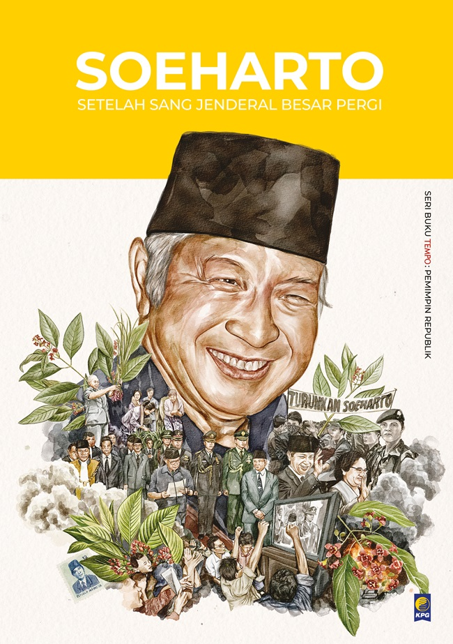
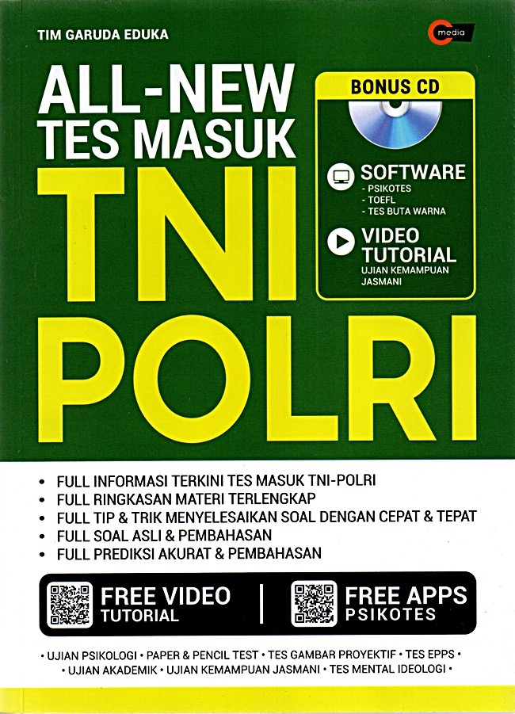
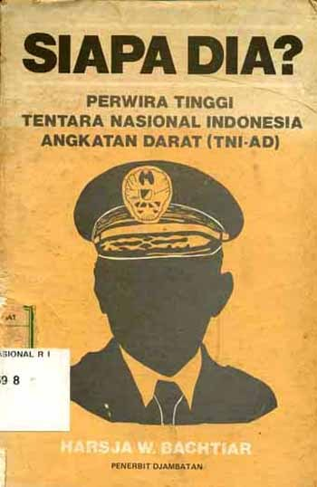

Bedah Buku: Sejarah suharto
Ditulis oleh: Panca

Suharto lahir pada 8 Juni 1921 di Dusun Kemusuk, Yogyakarta, dari keluarga sederhana. Ia memulai karier sebagai tentara pada masa pendudukan Jepang dan Belanda.
Karier Militer
Suharto meniti karier di militer hingga mencapai pangkat Mayor Jenderal. Ia dikenal luas setelah berperan dalam penumpasan Gerakan 30 September/PKI tahun 1965, yang kemudian membuka jalan bagi dirinya masuk ke panggung politik nasional.
Menjadi Presiden
Pada 1967, Suharto ditunjuk sebagai Pejabat Presiden menggantikan Sukarno, dan resmi dilantik sebagai Presiden kedua Indonesia pada 1968. Ia memimpin selama 32 tahun, menjadikan masa pemerintahannya yang terlama dalam sejarah Indonesia.
Masa Orde Baru
Di bawah kepemimpinannya, Indonesia mengalami stabilitas politik dan pertumbuhan ekonomi pesat. Namun, masa Orde Baru juga ditandai dengan otoritarianisme, pembatasan kebebasan politik, serta praktik korupsi yang meluas.
Akhir Kekuasaan
Krisis ekonomi Asia 1997–1998 melemahkan legitimasi pemerintahannya. Tekanan rakyat dan politik akhirnya membuat Suharto mengundurkan diri pada 21 Mei 1998.
Akhir Hayat
Suharto wafat pada 27 Januari 2008 di Jakarta. Ia dikenang sebagai tokoh yang membawa stabilitas sekaligus kontroversi besar dalam sejarah Indonesia.
Buku ini cocok dibaca oleh remaja dan orang dewasa yang sedang mencari motivasi hidup. Cerita persahabatan, perjuangan, dan cinta belajar
membuatnya menyentuh dan relevan bagi pembaca di berbagai usia.
Bedah Buku: Negeri 5 Menara
Ditulis oleh: Panca

Buku ini menceritakan perjalanan hidup Alif, seorang anak Minang yang menempuh pendidikan di pondok pesantren Madani.
Awalnya penuh keraguan, namun perlahan Alif menemukan makna perjuangan, persahabatan, dan kekuatan impian.
“Man Jadda Wajada – Siapa yang bersungguh-sungguh, dia akan berhasil.”
Kalimat itu menjadi semangat utama dalam buku ini. Kisah yang ditulis berdasarkan pengalaman nyata ini sangat menginspirasi,
terutama bagi pelajar yang sedang mengejar mimpi mereka. Penulis berhasil menyampaikan pesan-pesan moral melalui narasi yang hidup.
Buku ini cocok dibaca oleh remaja dan orang dewasa yang sedang mencari motivasi hidup. Cerita persahabatan, perjuangan, dan cinta belajar
membuatnya menyentuh dan relevan bagi pembaca di berbagai usia.
Bedah Buku: Alka
Ditulis oleh: Panca

Ini adalah buku yang berisi tentang semua atura-aturan yang ditetapkan bagi warganya
dan berbagai sangsi yang akan ditegakan secara tegas kepada siapapun yang melanggar aturan yang tertulis.
“Man Jadda Wajada – Siapa yang bersungguh-sungguh, dia akan berhasil.”
Kalimat itu menjadi semangat utama dalam buku ini. Kisah yang ditulis berdasarkan pengalaman nyata ini sangat menginspirasi,
terutama bagi pelajar yang sedang mengejar mimpi mereka. Penulis berhasil menyampaikan pesan-pesan moral melalui narasi yang hidup.
Buku ini cocok dibaca oleh remaja dan orang dewasa yang sedang mencari motivasi hidup. Cerita persahabatan, perjuangan, dan cinta belajar
membuatnya menyentuh dan relevan bagi pembaca di berbagai usia.
Bedah Buku: TNI
Ditulis oleh: Panca

TNI adalah institusi pertahanan yang lahir dari perjuangan kemerdekaan, kini bertransformasi menjadi militer profesional yang tetap dekat dengan rakyat.
“Man Jadda Wajada – Siapa yang bersungguh-sungguh, dia akan berhasil.”
Kalimat itu menjadi semangat utama dalam buku ini. Kisah yang ditulis berdasarkan pengalaman nyata ini sangat menginspirasi,
terutama bagi seorang remaja yang sedang mengejar mimpi mereka. Penulis berhasil menyampaikan pesan-pesan moral melalui narasi yang hidup.
Buku ini cocok dibaca oleh remaja dan orang dewasa yang sedang mencari motivasi untuk menjadi TNI. Cerita persahabatan, perjuangan, dan cinta belajar
membuatnya menyentuh dan relevan bagi pembaca di berbagai usia.
Bedah Buku: Perwira
Ditulis oleh: Panca

Perwira adalah pemimpin dalam dunia militer yang mengemban tanggung jawab besar, bukan hanya memimpin pasukan, tetapi juga menjaga kehormatan bangsa.
“Man Jadda Wajada – Siapa yang bersungguh-sungguh, dia akan berhasil.”
Kalimat itu menjadi semangat utama dalam buku ini. Kisah yang ditulis berdasarkan pengalaman nyata ini sangat menginspirasi,
terutama bagi seorang remaja yang sedang mengejar mimpi mereka. Penulis berhasil menyampaikan pesan-pesan moral melalui narasi yang hidup.
Buku ini cocok dibaca oleh remaja dan orang dewasa yang sedang mencari motivasi untuk menjadi seorang perwira. Cerita persahabatan, perjuangan, dan cinta belajar
membuatnya menyentuh dan relevan bagi pembaca di berbagai usia.
← Kembali ke Katalog